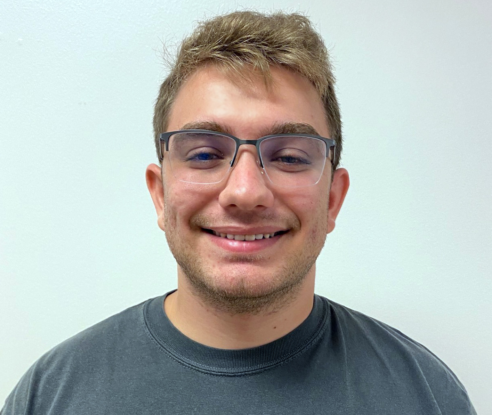
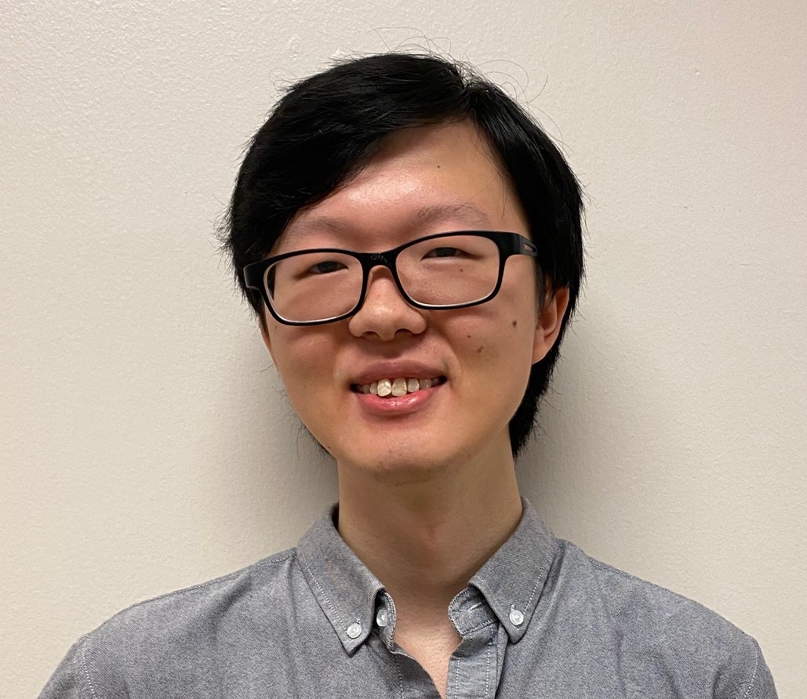

Mentoring
Students & Mentoring
I help students connect mathematics to what they already understand, then develop the confidence and independence to investigate unfamiliar problems.
Academic lineageView the historical lineage on Eitan Tadmor’s homepage
Doctoral students
Current
-
Baoli Hao
Illinois Institute of Technology
Data-driven modeling of complex systems and their emergent behavior
Co-adviser.
-
Chi-An Chen
Illinois Institute of Technology
Data-driven modeling of Keller-Segel-type PDEs and SPDEs
Research Co-adviser.
-
Kamrun Milly
University of Houston
Mathematical modeling of social dynamics, crowd behavior, and urban crime
Co-adviser.
-

Joseph Dingillo
University of Houston
Deep learning for conservation laws and computational physiology
Primary co-adviser.
Completed
-

Ziheng Guo
Ph.D. 2026
System Identification of Stochastic Dynamics
Sole adviser; advising began at Illinois Tech. Placement: Assistant Vice President (quantitative research) at Wells Fargo.
Undergraduate students
- Summer 2023Jean-Yves Thomason, Cameron Hatler, and Camryn Rhude
Sole adviser for Illinois Tech REU projects on modeling social problems in Chicago.
- 2023–2024Trenton Gerew · Illinois Tech
Sole adviser. The project contributed to research on concurrent clustering, flocking, and synchronization; placement in the mathematics Ph.D. program at the University of Kansas.